Capitolo 4 Mediana, Percentili e Moda
4.1 La Mediana
La Mediana, Me o \(x_{0.5}\), è il valore centrale della serie dei dati riordinati in due: metà dei dati sono minori della mediana e metà dei dati sono maggiori della mediana. In simboli: sia \(x_{1},...,x_{n}\) la serie dei dati e \(x_{(1)},...,x_{(n)}\) i dati riordinati in modo crescente, allora:
- se \(n\) è dispari \[x_{0.5}=x_{\left(\frac{n+1}{2}\right)}\]
- se \(n\) è pari \[x_{0.5}=\frac 1 2 \left(x_{\left(\frac{n}{2}\right)}+x_{\left(\frac{n}{2}+1\right)}\right)\]
Esempio 4.1 Sia \[(x_1=2.9,x_2=3.5,x_3=1.2,x_4=2.7, x_5=4.2)\] la serie dei dati, la serie dei dati riordinati sarà \[(x_{(1)}=1.2, x_{(2)}=2.7, x_{(3)}=2.9, x_{(4)}=3.5,x_{(5)}=4.2),\]
\(n=5\) è dispari e dunque
\[x_{0.5}=x_{\left(\frac{n+1}{2}\right)}=x_{\left(\frac{5+1}{2}\right)}=x_{\left(3\right)}=2.9\]
Esempio 4.2 Sia \[(x_1=2.9,x_2=3.5,x_3=1.2,x_4=2.7, x_5=4.2, x_6=4.2)\] la serie dei dati, la serie dei dati riordinati sarà \[(x_{(1)}=1.2, x_{(2)}=2.7, x_{(3)}=2.9, x_{(4)}=3.5,x_{(5)}=4.2,x_{(6)}=4.2)\]
\(n=6\) è pari e dunque
\[x_{0.5}=\frac 1 2 \left(x_{\left(\frac{n}{2}\right)}+x_{\left(\frac{n}{2}+1\right)}\right)= \frac 1 2 \left(x_{\left(\frac{6}{2}\right)}+x_{\left(\frac{6}{2}+1\right)}\right)= \frac 1 2 \left(x_{\left(3\right)}+x_{\left(4\right)}\right)=\frac{2.9+3.5}2=3.2\]
4.1.1 Dati espressi in distribuzione di frequenza
Se il fenomeno è espresso in una tabella di distribuzione di frequenza, allora la modalità mediana è la prima modalità tale per cui la frequenza cumulata è maggiore di 0.5
Esempio 4.3 Fenomeno Titolo di Studio, \(n=350\), numero di modalità \(k=5\).
| \(j\) | \(x_{j}\) | \(n_j\) | \(f_j\) | \(F_j\) |
|---|---|---|---|---|
| 1 | Elementare | 35 | 0.10 | 0.10 |
| 2 | Media inferiore | 105 | 0.30 | 0.40 |
| 3 | Media Superiore | 147 | 0.42 | 0.82 |
| 4 | Laurea | 35 | 0.10 | 0.92 |
| 5 | Post Laurea | 28 | 0.08 | 1.00 |
La modalità mediana è la terza \(j=3\), dunque Media Superiore, infatti \(F_3=0.82>0.50\).
4.1.2 Dati espressi in classi
Se il fenomeno è espresso in classi, allora l’intervallo mediano è la primo intervallo tale per cui la frequenza cumulata è maggiore di 0.5.
Esempio 4.4
Il reddito di \(n=\) 4700 famiglie è rappresentato nella seguente tabella di frequenza| \(j\) | \([\text{x}_j,\) | \(\text{x}_{j+1})\) | \(n_j\) | \(f_j\) | \(b_j\) | \(h_j\) | \(F_j\) |
|---|---|---|---|---|---|---|---|
| 1 | 0 | 10 | 517 | 0.11 | 10 | 1.1 | 0.11 |
| 2 | 10 | 15 | 1269 | 0.27 | 5 | 5.4 | 0.38 |
| 3 | 15 | 20 | 1551 | 0.33 | 5 | 6.6 | 0.71 |
| 4 | 20 | 25 | 987 | 0.21 | 5 | 4.2 | 0.92 |
| 5 | 25 | 35 | 376 | 0.08 | 10 | 0.8 | 1.00 |
| 4700 | 1.00 | 35 |
La classe mediana è la terza classe \(j=3\), ovvero la classe [15,20), in quanto \(F_3=0.71>0.50\).
Il valore approssimato della mediana è un valore che si trova all’interno dell’intervallo mediano e si ottiene dalla formula
\[x_{0.5}=x_{\inf;m}+\frac{0.5-F_{m-1}}{f_m}\cdot \left(x_{\sup;m}-x_{\inf;m} \right),\]
dove \(m\) è l’indicatore della classe mediana, \(x_{\inf;m}\) e \(x_{\sup;m}\) sono, rispettivamente l’estremo inferiore e quello superiore dell’intervallo che contiene la mediana.
Esempio 4.5 Nell’esempio precedente l’intervallo mediano è [15,20) otterremo:
\[\begin{eqnarray*} p &=& 0.5 , \text{essendo }F_{ 3 }= 0.71 > 0.5 \Rightarrow j_{ 0.5 }= 3 \\ x_{ 0.5 } &=& x_{\text{inf}; 3 } + \frac{ { 0.5 } - F_{ 2 }} {f_{ 3 }} \cdot b_{ 3 } \\ &=& 15 + \frac {{ 0.5 } - 0.38 } { 0.33 } \cdot 5 \\ &=& 16.82 \end{eqnarray*}\]
La mediana è quel valore che taglia l’istogramma in due parti, entrambe di area pari al 50% dell’area totale
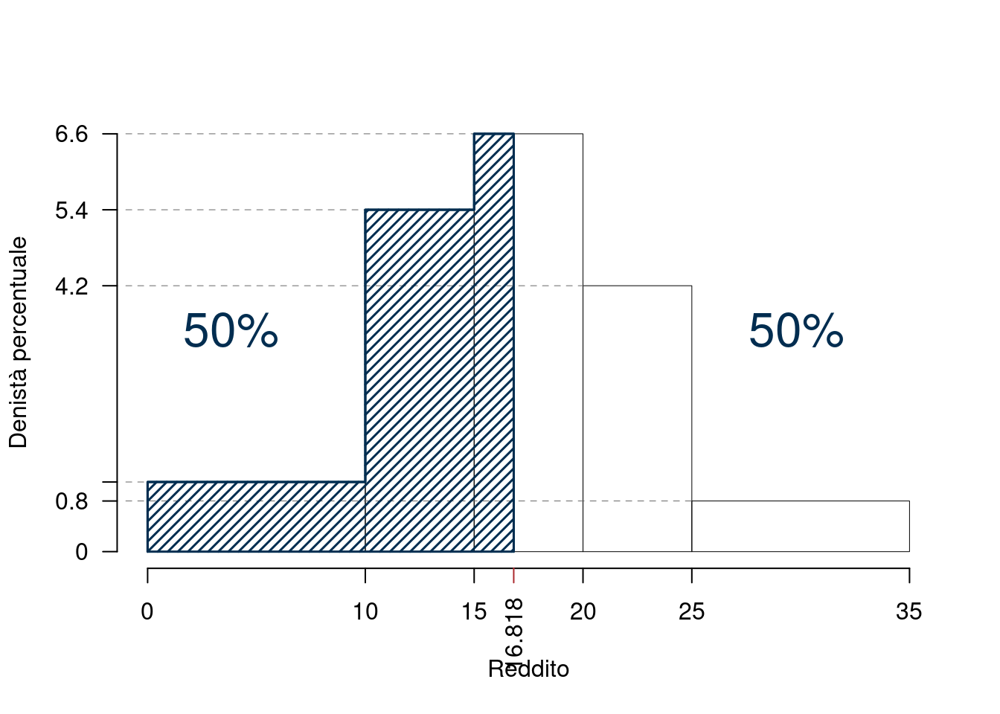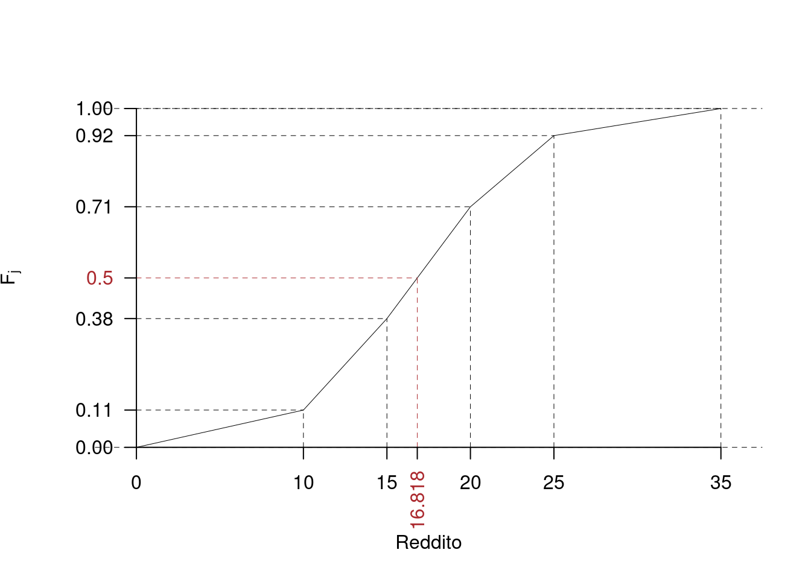
L’area tratteggiata è il 50% dell’area totale.
4.1.3 Proprietà della Mediana
Proprietà 4.1 (della Mediana) La mediana di una distribuzione, \(x_{0.5}\), è quel valore della per \(X\) il quale si ha \(F(x_{0.5}) = 0.5\). Le proprietà della mediana (\(x_{0.5}\)) sono:
- \(x_{\min} \leq x_{0.5} \leq x_{\max}\),
- \(\sum_{j=1}^{n} |x_{j} - x_{0.5}|\) è un minimo.
- Relazione Media-Mediana:
- Distribuzione simmetrica \(\rightarrow\) \(x_{0.5} = \bar{x}\)
- Distribuzione con coda lunga a destra \(\rightarrow\) \(x_{0.5} < \bar{x}\)
- Distribuzione con coda lunga a sinistra \(\rightarrow\) \(x_{0.5} > \bar{x}\)
4.2 I Percentili
Il \(p\)-esimo percentile \(x_p\), \(0\leq p\leq 1\), è qual valore che divide la serie dei dati riordinati in due: il \(p\times100\%\) dei dati sono minori di \(x_p\) e \((1-p)\times100\%\) dei dati sono maggiori di \(x_p\). Se per esempio \(p=0.30\) allora il trentesimo percentile è quel valore che ha il 30% dei dati inferiore il 70% dei dati superiore. Il \(p\)-esimo percentile di una serie di dati è il valore che occupa la posizione \(\lfloor {p\times n}\rfloor+1\), dove \(\lfloor x\rfloor\) è l’operatore che estrae la parte intera di un numero decimale, ad esempio \(\lfloor 3.001\rfloor=\lfloor 3.21\rfloor=\lfloor 3.94\rfloor=3\).
Esempio 4.6 Si considerino \(n=21\) osservazioni di una variabile categoriale ordinata che assume 7 valori: \(-2\), \(-1\), \(0\), \(1\), \(2\) (ad esempio una scala del tipo \(-2=\)in totale disaccordo, \(-1=\)più in disaccordo che in accordo, \(0=\)né d’accordo, né in disaccordo, \(1=\)più d’accordo che in disaccordo, \(2=\)totalmente d’accordo). Qui di seguito i dati riordinati:
| \((i)\) | 1 | 2 | 3 | 4 | 5 | 6 | 7 | 8 | 9 | 10 | 11 | 12 | 13 | 14 | 15 | 16 | 17 | 18 | 19 | 20 | 21 |
| \(x_i\) | -2 | -1 | -1 | -1 | 0 | 0 | 0 | 0 | 0 | 0 | 0 | 0 | 1 | 1 | 1 | 2 | 2 | 2 | 2 | 2 | 2 |
Il 15-esimo percentile è il dato che occupa la \(\lfloor n\times p \rfloor+1 =\lfloor 21\times 0.15\rfloor+1= 3+1=4\), e dunque il 15-esimo percentile è il quarto dato \(x_{(4)}=-1\). È chiaro che la mediana è il 50-esimo percentile. In questo caso \(x_{0.5}=x_{\left(\lfloor21\times 0.5\rfloor +1\right)}=x_{(11)}=0\).
4.2.1 Dati espressi in distribuzione di frequenza
Se il fenomeno è espresso in una tabella di distribuzione di frequenza, allora il \(p\)-esimo percentile è la prima modalità tale per cui la frequenza cumulata è maggiore di \(p\).
Esempio 4.7 Fenomeno Titolo di Studio, \(n=350\), numero di modalità \(k=5\).
| \(j\) | \(x_{j}\) | \(n_j\) | \(f_j\) | \(F_j\) |
|---|---|---|---|---|
| 1 | Elementare | 35 | 0.10 | 0.10 |
| 2 | Media inferiore | 105 | 0.30 | 0.40 |
| 3 | Media Superiore | 147 | 0.42 | 0.82 |
| 4 | Laurea | 35 | 0.10 | 0.92 |
| 5 | Post Laurea | 28 | 0.08 | 1.00 |
Il 90-esimo percentile \(x_{0.90}\) è la quarta modalità, \(x_{4}=\)Laurea.
Esempio 4.8 Fenomeno: Numero di volte che si è cercato lavoro negli ultimi 3 mesi, \(n=322\)
| \(j\) | \(x_{j}\) | \(n_j\) | \(f_j\) | \(F_j\) |
|---|---|---|---|---|
| 1 | 0 | 20 | 0.0621 | 0.0621 |
| 2 | 1 | 47 | 0.1460 | 0.2081 |
| 3 | 2 | 80 | 0.2484 | 0.4565 |
| 4 | 3 | 64 | 0.1988 | 0.6553 |
| 5 | 4 | 46 | 0.1429 | 0.7981 |
| 6 | 5 | 36 | 0.1118 | 0.9099 |
| 7 | 6 | 16 | 0.0497 | 0.9596 |
| 8 | 7 | 9 | 0.0280 | 0.9876 |
| 9 | 8 | 3 | 0.0093 | 0.9969 |
| 10 | 10 | 1 | 0.0031 | 1.0000 |
Il 25-esimo percentile è la terza modalità in quanto \(F_3=0.45>0.25\), \(x_{0.25}=x_3=2\). Il 50-esimo percentile, la mediana, è \(x_{0.5}=x_4=3\) e il 75-esimo percentile è \(x_{0.75}=x_5=4\).
4.2.2 Dati espressi in classi
Se il fenomeno è espresso in classi, allora l’intervallo che contiene il \(p\)-esimo percentile è il primo intervallo tale per cui la frequenza cumulata è maggiore di \(p\). Il valore approssimato del percentile è un valore che si trova all’interno dell’intervallo e si ottiene dalla formula
\[x_{p}=x_{\inf;j_p}+\frac{p-F_{j_p-1}}{f_{j_p}}\cdot \left(x_{\sup;j_p}-x_{\inf;j_p} \right)\]
dove \(j_p\) è l’indicatore della classe che contiene il \(p\)-esimo percentile, \(x_{\inf;j_p}\) e \(x_{\sup;j_p}\) sono, rispettivamente, l’estremo inferiore e quello superiore.
Esempio 4.9
Il reddito di \(n=\) 4700 famiglie è rappresentato nella seguente tabella di frequenza| \(j\) | \([\text{x}_j,\) | \(\text{x}_{j+1})\) | \(n_j\) | \(f_j\) | \(b_j\) | \(h_j\) | \(F_j\) |
|---|---|---|---|---|---|---|---|
| 1 | 0 | 10 | 517 | 0.11 | 10 | 1.1 | 0.11 |
| 2 | 10 | 15 | 1269 | 0.27 | 5 | 5.4 | 0.38 |
| 3 | 15 | 20 | 1551 | 0.33 | 5 | 6.6 | 0.71 |
| 4 | 20 | 25 | 987 | 0.21 | 5 | 4.2 | 0.92 |
| 5 | 25 | 35 | 376 | 0.08 | 10 | 0.8 | 1.00 |
| 4700 | 1.00 | 35 |
La classe che contiene il \(25\)-esimo percentile è la seconda classe \(j_{0.25}=2\), ovvero la classe (10,15], in quanto \(F_2=0.2081>0.25\).
\[\begin{eqnarray*} p &=& 0.25 , \text{essendo }F_{ 2 }= 0.38 > 0.25 \Rightarrow j_{ 0.25 }= 2 \\ x_{ 0.25 } &=& x_{\text{inf}; 2 } + \frac{ { 0.25 } - F_{ 1 }} {f_{ 2 }} \cdot b_{ 2 } \\ &=& 10 + \frac {{ 0.25 } - 0.11 } { 0.27 } \cdot 5 \\ &=& 12.59 \end{eqnarray*}\]
Il \(p\)-esimo percentile \(x_p\) è quel valore che taglia l’istogramma in due parti, l’area dell’istogramma alla sinistra di \(x_p\) è pari a \(p\times 100\%\), mentre l’area la sua destra è \((1-p)\times 100\%\)
 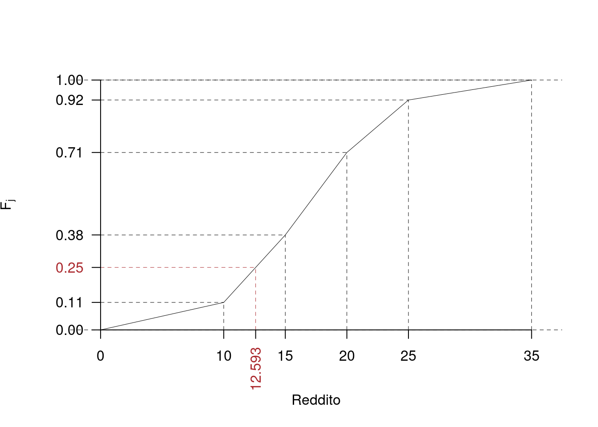
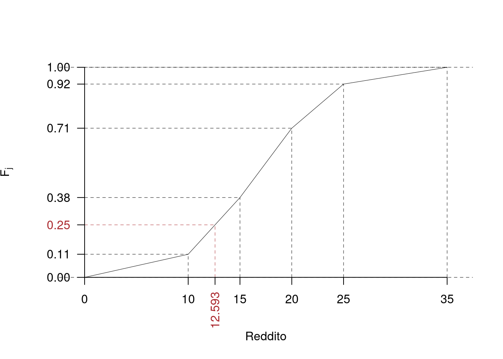
L’area in blue è il 25% dell’area totale, quella in grigio il 75%.
4.2.3 I Quartili
Si definiscono i quartili della VS \(X\), il 25-esimo, il 50.esimo e il 75-esimo percentile di \(X\): \[ (x_{0.25},x_{0.5},x_{0.75}) \]
4.2.4 Percentili e Funzione di Ripartizione
Se i dati sono quantitativi continui raccolti in classi e \(F\) è la funzione di ripartizione di \(X\) allora il percentile è quel valore tale che \[ F(x_p)=p \] ovvero a sinistra di \(x_p\) c’è il \(p\times 100\%\) dei dati e a destra di \(x_p\) il rimanente \((1-p)\times 100\%\). Per esempio sappiamo nel caso studiato sopra che \(x_{0.25}=12.593\) e quindi \(F(12.593)=0.25\).
Ogni valore di \(X\) dal suo minimo al suo massimo è un percentile, per esempio il valore 15 è il 38-esimo percentile di \(X\) (\(x_{0.38}=15\)), infatti il 38% dei dati è inferiore a 15: \[ F(15)=F_{2}=0.38 \] Mentre la funzione inversa \(Q=F^{-1}\) è la funzione che ci permette di calcolare il percentile di ordine \(p\): \[ Q(p)=x_p. \] Per esempio \[ Q(0.25)=x_{0.25}=12.593 \]
Questa applicazione interattiva aiuta a comprendere meglio la relazione tra istogramma e funzione di ripartizione: La Funzione di Ripartizione
4.3 Lo Scarto Interquartile
Una misura di variabilità è lo scarto interquartile \[ SI = x_{0.75}-x_{0.25} \]
4.4 La Moda
Si definisce la moda, \(x_{Mo}\) la modalità cui compete frequenza maggiore.
Esempio 4.10 Consideriamo la distribuzione del colore dei capelli
| \(\mathrm{x}_j\) | Cast. | Biondi | Rossi | Tot |
| \(n_j\) | 245 | 68 | 13 | 326 |
La modalità modale (la moda) è \(x_{Mo}\)=Castano.
Esempio 4.11 Titolo di studio:
| \(\mathrm{x}_j\) | Prim. | M. inf. | M. sup. | Univ. | Post univ. | Tot |
| \(n_j\) | 10 | 18 | 158 | 62 | 12 | 260 |
La modalità modale (la moda) è \(x_{Mo}=\)M. sup.
Esempio 4.12 \(\phantom{2}\)
| 0 | 1 | 2 | 3 | 4 |
|---|---|---|---|---|
| 1 | 11 | 6 | 8 | 5 |
La modalità modale è \(\mathrm{x} = 1\) e osserviamo che la media è 2.1613 e la mediana è 2
4.4.1 La Moda per dati raccolti in classi
Se i dati sono sono raccolti in classi, non c’è un valore modale ma una classe modale ed è la classe cui compete densità maggiore.
Esempio 4.13 \(\phantom{2}\)
| \(j\) | \([\text{x}_j,\) | \(\text{x}_{j+1})\) | \(n_j\) | \(f_j\) | \(b_j\) | \(h_j\) | \(F_j\) |
|---|---|---|---|---|---|---|---|
| 1 | 0 | 10 | 517 | 0.11 | 10 | 1.1 | 0.11 |
| 2 | 10 | 15 | 1269 | 0.27 | 5 | 5.4 | 0.38 |
| 3 | 15 | 20 | 1551 | 0.33 | 5 | 6.6 | 0.71 |
| 4 | 20 | 25 | 987 | 0.21 | 5 | 4.2 | 0.92 |
| 5 | 25 | 35 | 376 | 0.08 | 10 | 0.8 | 1.00 |
| 4700 | 1.00 | 35 |
la classe modale è la terza classe, la classe \([15,20)\)
4.5 Relazione tra Media, Moda e Mediana
Se la VS \(X\) ha una sola classe modale, allora valgono le seguenti relazioni:
- Se la distribuzione presenta un’asimmetria negativa (coda lunga a sx) allora \[\bar x\le x_{0.5} \le x_{mo}\]
- Se la distribuzione è simmetrica allora \[x_{mo}\approx x_{0.5}\approx \bar x\]
- Se la distribuzione presenta un’asimmetria positiva (coda lunga a dx) allora \[x_{mo}\le x_{0.5}\le \bar x\]
La figura 4.1 ne offre una rappresentazione grafica.
Figura 4.1 Relazione tra media mediana e moda
4.6 Istogramma e Percentili
La relazione tra istogramma di densità e percentili è evidente, i percentile di ordine \(p\) indica per quale valore di \(x_p\) l’area dell’istogramma fino misurano l’area dell’istogramma fino ad \(x_p\) vale \(p\).
Attraverso il seguente esempio osserveremo meglio il legame tra i due concetti.
Esempio 4.14 Il reddito di \(n=\) 4700 famiglie (dati inventati) è rappresentato nella tabella di frequenza qui di seguito
| \([\text{x}_j,\) | \(\text{x}_{j+1})\) | \(f_j\) |
|---|---|---|
| 0 | 10 | 0.18 |
| 10 | 20 | 0.30 |
| 20 | 50 | 0.42 |
| 50 | 90 | 0.10 |
| 1.00 |
Per prima cosa calcoliamo tutta la tabella: la colonna delle frequenza assolute e cumulate, delle densità, ecc.
| \([\text{x}_j,\) | \(\text{x}_{j+1})\) | \(n_j\) | \(f_j\) | \(b_j\) | \(h_j\) | \(F_j\) | \(\bar{\text{x}}_j\) | \(\bar{\text{x}}_j^2\) | \(\bar{\text{x}}_jn_j\) | \(\bar{\text{x}}_j^2 n_j\) | \(f_{j\%}\) |
|---|---|---|---|---|---|---|---|---|---|---|---|
| 0 | 10 | 846 | 0.18 | 10 | 1.80 | 0.18 | 5 | 25 | 4230 | 21150 | 18 |
| 10 | 20 | 1410 | 0.30 | 10 | 3.00 | 0.48 | 15 | 225 | 21150 | 317250 | 30 |
| 20 | 50 | 1974 | 0.42 | 30 | 1.40 | 0.90 | 35 | 1225 | 69090 | 2418150 | 42 |
| 50 | 90 | 470 | 0.10 | 40 | 0.25 | 1.00 | 70 | 4900 | 32900 | 2303000 | 10 |
| 4700 | 1.00 | 90 | 127370 | 5059550 | 100 |
Quindi disegniamo l’istogramma di densità percentuale, dove le \(h\) sono usate come altezze e le \(f_{\%}\) sono le aree dei rettangoli.
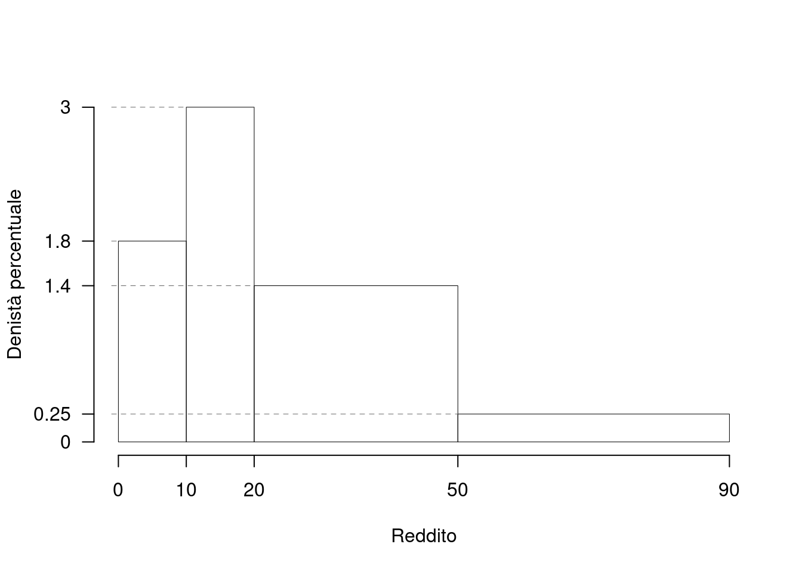
Se al posto delle \(h\) usiamo le \(f\) disegniamo l’istogramma sbagliato, . Notiamo che la classe \([20,50)\) viene sovra rappresentata. Infatti è vero che il 45% delle famiglie si trova in quella classe, ma è anche vero che l’ampiezza della classe molto grande e l’istogramma non rappresenta i dati.
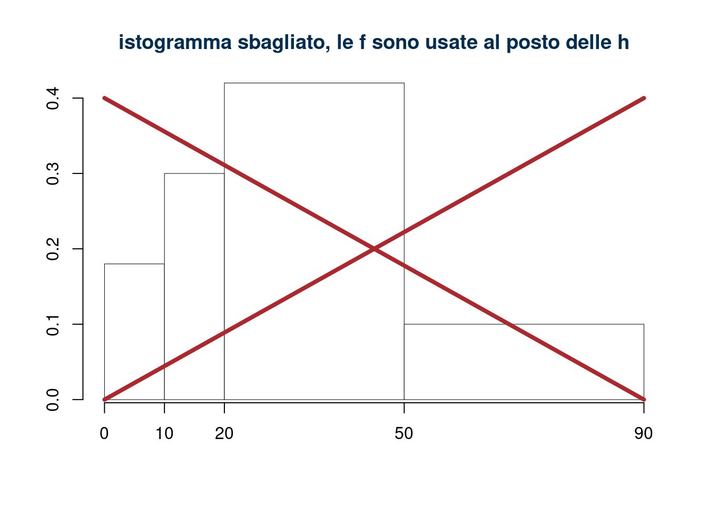
Per disegnare un istogramma di densità in modo corretto si devono rispettare le proporzioni tra le basi
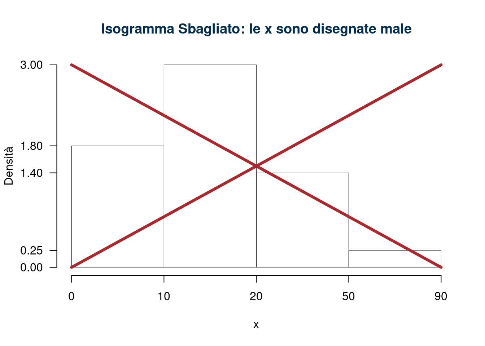
Una volta che abbiamo ricostruito tutta la tabella e realizzato il grafico possiamo rispondere a tante domande sulla distribuzione dei dati, quali, per esempio:
- Individuare la classe modale
La classe modale è la classe [10,20) non la classe 20-50. Infatti la classe modale è la classe con densità maggiore, non la classe con frequenza maggiore.
- Individuare la classe che contiene la mediana
La classe mediana è la terza classe [20,50), infatti \(F_3=0.90\) è il primo degli \(F_j\) che super \(0.50\).
- Calcolare \(x_0, x_{0.10}, x_{0.20},..., x_{0.90}, x_1\)
\[x_p = x_{\text{inf};j_p} + \frac {p - F_{j_p - 1}} {f_{j_p}} b_{j_p}\]
\[x_0 = 0, ~~~\text{il più piccol dei dati}\]
\[\begin{eqnarray*} p &=& 0.1 , \text{essendo }F_{ 1 }= 0.18 > 0.1 \Rightarrow j_{ 0.1 }= 1 \\ x_{ 0.1 } &=& x_{\text{inf}; 1 } + \frac{ { 0.1 } - F_{ 0 }} {f_{ 1 }} \cdot b_{ 1 } \\ &=& 0 + \frac {{ 0.1 } - 0 } { 0.18 } \cdot 10 \\ &=& 5.556 \end{eqnarray*}\]
\[\begin{eqnarray*} p &=& 0.2 , \text{essendo }F_{ 2 }= 0.48 > 0.2 \Rightarrow j_{ 0.2 }= 2 \\ x_{ 0.2 } &=& x_{\text{inf}; 2 } + \frac{ { 0.2 } - F_{ 1 }} {f_{ 2 }} \cdot b_{ 2 } \\ &=& 10 + \frac {{ 0.2 } - 0.18 } { 0.3 } \cdot 10 \\ &=& 10.67 \end{eqnarray*}\] \[\vdots\]
\[\begin{eqnarray*} p &=& 0.9 , \text{essendo }F_{ 4 }= 1 > 0.9 \Rightarrow j_{ 0.9 }= 4 \\ x_{ 0.9 } &=& x_{\text{inf}; 4 } + \frac{ { 0.9 } - F_{ 3 }} {f_{ 4 }} \cdot b_{ 4 } \\ &=& 50 + \frac {{ 0.9 } - 0.9 } { 0.1 } \cdot 40 \\ &=& 50 \end{eqnarray*}\] \[x_{1.0} = 90, ~~~\text{il più grande dei dati}\]
Riassumendo in tabella otteniamo:
| \(x_{ 0 }\) | \(x_{ 0.1 }\) | \(x_{ 0.2 }\) | \(x_{ 0.3 }\) | \(x_{ 0.4 }\) | \(x_{ 0.5 }\) | \(x_{ 0.6 }\) | \(x_{ 0.7 }\) | \(x_{ 0.8 }\) | \(x_{ 0.9 }\) | \(x_{ 1 }\) | |
|---|---|---|---|---|---|---|---|---|---|---|---|
| Percentili | 0 | 5.556 | 10.67 | 14 | 17.33 | 21.43 | 28.57 | 35.71 | 42.86 | 50 | 90 |
- mettere a grafico i punti (0,\(x_0\)), (0.10,\(x_{0.10}\)),…,(1,\(x_{1}\))) e (\(x_0\),0), (\(x_{0.10}\),0.10),…,(\(x_{1}\),1))
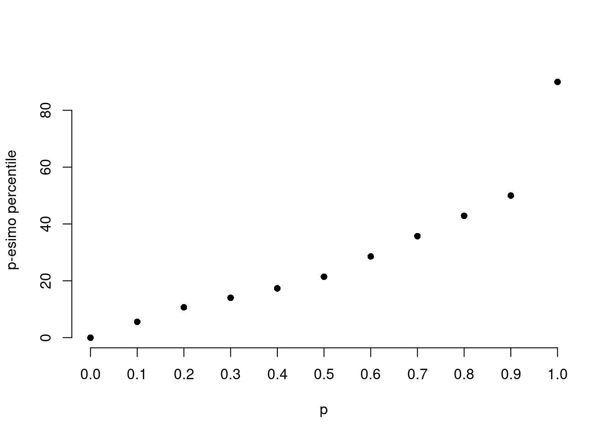
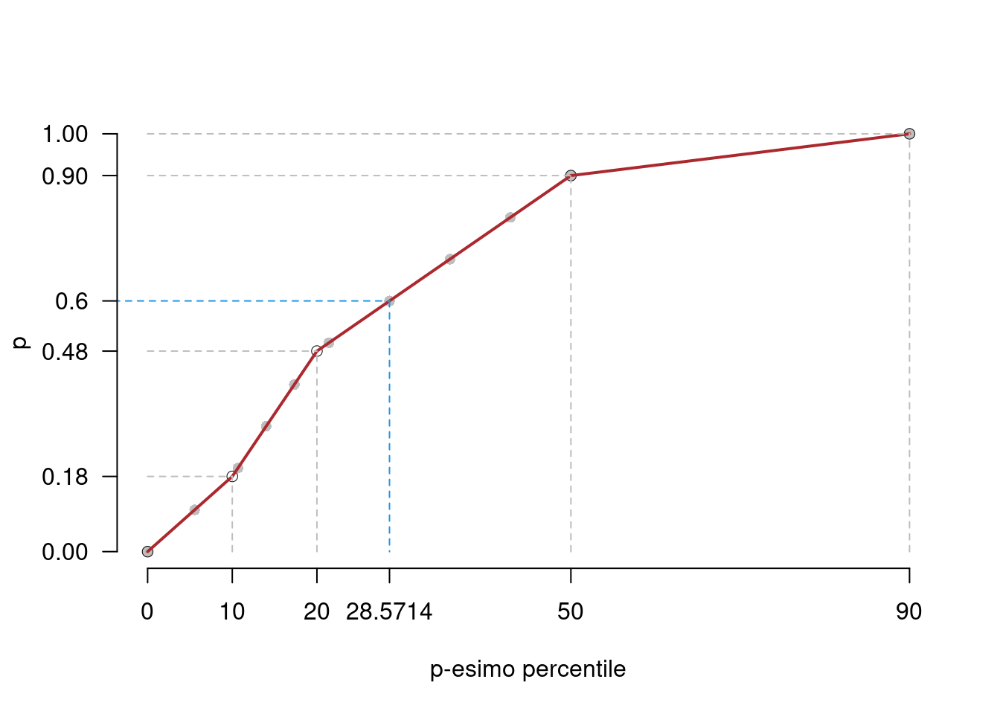
- calcolare la percentuale di individui con reddito inferiore a 50
90% è la percentuale di individui con reddito minore di 50
calcolare la percentuale di individui con reddito superiore a 20
- 48% è la percentuale di individui con reddito minore di 20
- 52% è la percentuale di individui con reddito maggiore di 20
calcolare la percentuale approssimata di individui con reddito inferiore a 14
Per calcolare \(\%(X<14)\) abbiamo diversi modi, anzi tutto notiamo che la percentuale di \(dat2\) minori di 14 è, approssimativamente, l’area dell’istogramma da zero a 14. E quindi, direttamente:
\[\begin{eqnarray*} \%(X<14) &=& f_1\times 100+(14-10)\times h_2\\ &=& 0.18\times 100 + 4\times 3\\ &=& 30\% \end{eqnarray*}\]
In modo del tutto analogo con la funzione di ripartizione \(F\)
\[\begin{eqnarray*} \%(X<14) &=& 100\times F(14)\\ &=& 100\times(f_1+(14-10)\times h_2/100)\\ &=& 100\times(0.18 + 4\times 3/100)\\ &=& 30\% \end{eqnarray*}\]
Ma anche notando che \(x_{0.30}=14\), significa che \(F(x_{0.30})=0.30\) e \(\%(X<14)=100\times F(x_{0.30})=30\%\).
- Calcolare la percentuale approssimata di individui con reddito superiore a 28.57
Notiamo che \(x_{0.60}\) = 28.57 e quindi \(F(x_{0.60})=0.60\), quindi \(\%(X<28.57)=0.60\times 100=60\%\) e quindi \(\%(X>28.57)=40\%\)
- Calcolare la percentuale approssimata di individui con reddito inferiore a 35
Si tratta di calcolare l’area in blu:
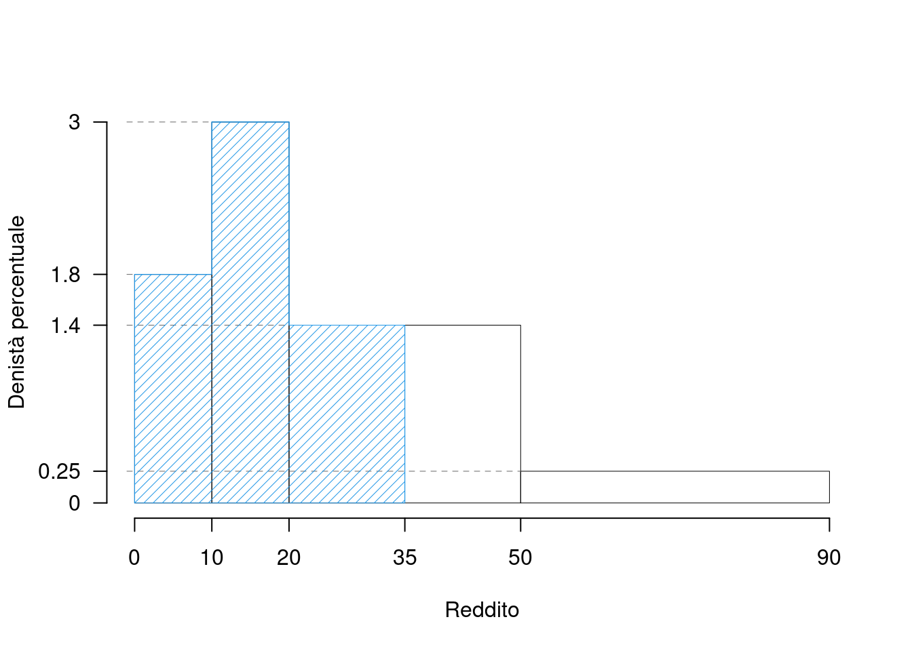
e osservare che la sua area misura 69. Infatti l’area è data dalla somma di \[\begin{eqnarray*} \%(X\leq 35) &=& f_1\times 100+f_2\times 100+(35-20)\times h_3 \\ &=& 18+30+15\times 1.4\\ &=& 69 \end{eqnarray*}\]
- calcolare la percentuale approssimata di individui con reddito superiore a 16
Si tratta di calcolare l’area in blu:
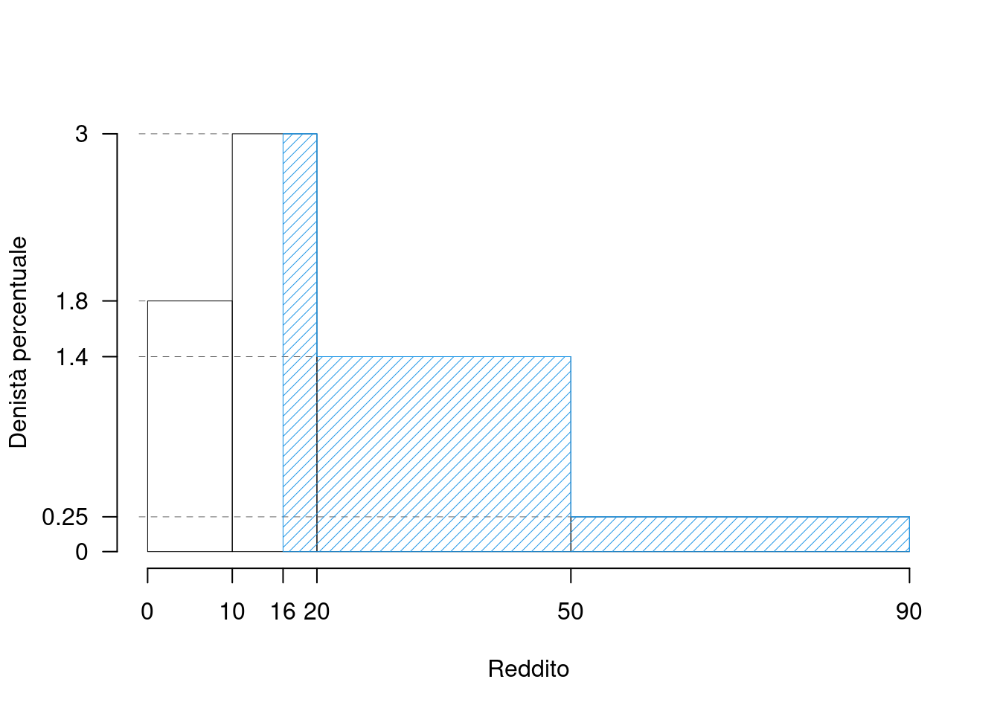
e osservare che la sua area misura 64. Infatti l’area si può vedere o direttamente calcolandola da 16 a 100 oppure si può valutarla come complemento: \[\%(X>16)=100\%-\%(X\leq 16)\] e quindi: \[\%(X\leq 16)=f_1\times 100+(16-10)\times h_2=36\] Quindi \(\%(X>16)=100-36=64\)
- Individuare la media approssimata, la varianza approssimata, e i quartili approssimati
La media: \[\bar x = \frac 1 n \sum_j x_{jc} n_j = \frac 1{4700}127370=27.1 \]
La varianza: \[Var(X)=\frac {\sum_j x_{jc}^2 n_j }{n}-\bar x^2=\frac 1{4700}5059550-(27.1)^2=342.09\]
\(\bar x=\) 27.1, \(Var=\) 342.09, \((x_{0.25},x_{0.50},x_{0.75})=\) (12.3333, 21.4286, 39.2857)
- Calcolare la percentuale di dati compresi tra il 25-esimo e il 75-esimo percentile
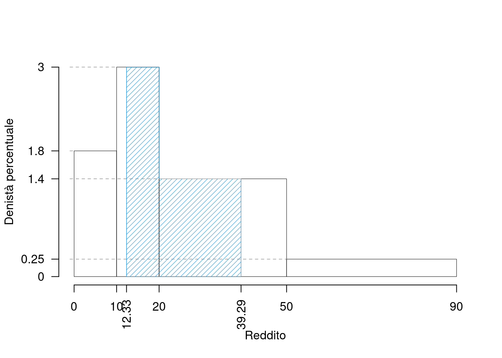
- calcolare \(x_{0.025}\) e \(x_{0.975}\)
i valori sono \((x_{0.025}, x_{0.975})=\)(1.3889, 80)
- Rappresentare graficamente e calcolare la percentuale di famiglie con reddito:
- compreso tra 1.3889 e 80
- compreso tra 0 e 1.3889
- compreso tra 1.3889 e 21.4286
- compreso tra 21.4286 e 80
- compreso tra 80 e 100
- minore di 1.3889 o maggiore di 80